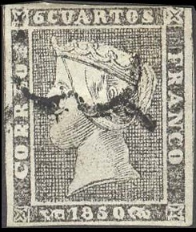
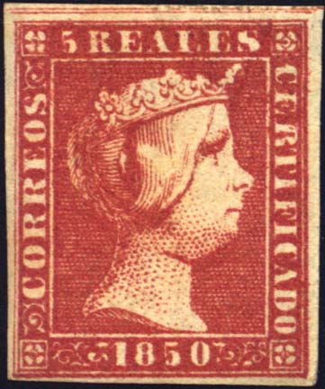
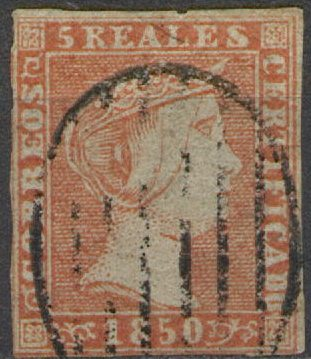
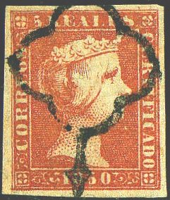
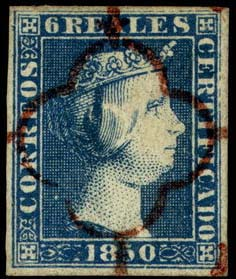

(I presume this stamp is genuine)
Return To Catalogue - Spain Queen Isabella 1850-1855
Note: on my website many of the
pictures can not be seen! They are of course present in the
catalogue;
contact me if you want to purchase it.
Many forgeries were made of the 1850 issue with Queen Isabella. Much information can be found on: http://www.graus.com/ (in Spanish). Forgeries are known to be made by Segui, Fournier, Sperati and more recently by Peter Winter and others. Segui forgeries are normally uncancelled (so be careful when 'valuable' unused Spanish stamps are offered!). Segui made forgeries of all values of this serie (5).
(I presume this stamp is genuine)
In the genuine 6 cuartos stamps, there is an extension of the background pattern below the '6' in the vertical white line (but some forgeries also show this). Furthermore, there are small black lines penetrating into the white line below '6 CUARTOS'.

(A very primitive forgery)

Another rather primitive forgery, the chin of the queen is very
large

(Segui forgeries?)

(Segui forgery?)
Two forgeries of the 6 cuartos are described in Album Weeds. The first one has very clumsy ornaments at both sides of the '1850'. The '0' of '1850' is very circular (sorry, no picture available yet). The second forgery has a very tall, thin '6', the upper half of the '8' of '1850' is smaller than the lower half.

(Peter Winter forgeries)
The forger Peter Winter made a 'proof' of the 6 cuartos stamp in green. No such proof was ever issued, for more information see: http://rbpuzzles.tripod.com/SPC/compare/1850.html. He also made a similar forgery in black which is made from a photograph and shows all the distinghuishing characteristics. These forgeries (always?) have the word 'REPLIK' printed on the backside.
There is also a postal forgery of the 6 c value, the first postal forgery of the world (only one forgery has survived). Source: http://webcindario.com/seiscuartos/primeraemision.htm.
A 'reprint' in a minisheet made for the 'Salon der Philatelie' in
Hamburg in 1984. At the bottom of the stamp is written
'Reproduktion 1984'.

Genuine stamp, image obtained from
http://rbpuzzles.tripod.com/SPC/compare/2_f1c.html
In the genuine stamps, there is a break in the frameline just above the '2' of '12'. Furthermore, the bottom stroke of the 'E' of 'CORREOS' touches the middle stroke. The ornament to the left of '1850' only has two little dots at the left hand side (Segui forgeries have three dots). There is a small horizontal line attached to the dot below the 'S'.
Forgery:

Image obtained from
http://rbpuzzles.tripod.com/SPC/compare/2_f1c.html
Note, that in the above forgery the upper right cross is not placed symmetricaly in its square.
The next stamps are Segui forgeries:


(The first stamp is a Segui forgery, the
other probably as well)
Other forgery:
The next stamp is a Sperati forgery:


Left image obtained from the forgeries idenfication site of Bill
Claghorn: http://geocities.com/claghorn1p/.
This Sperati forgery always has the cancel in exactly the same position and can therefore be easily identified.
Genuine stamp:

Genuine stamp, image obtained from
http://rbpuzzles.tripod.com/SPC/compare/3_f1c.html
A very primitive forgery in the design of the 6 Cuartos (Queen Isabella facing the left!):

(A forgery of the 5 r in the design of the 6 c black!)
Another primitive forgery:

First forgery of the 5 r of Album Weeds (attributed to Spiro):

(First forgery of Album Weeds)
The above forgery has the eye placed too high. The 'E' and 'A' of 'REALES' are joined at the bottom. The 'C' of 'CORREOS' is very flat at the bottom. The '8' is more elegant in this forgery than in the genuine stamps. The cancels that can be found on these forgeries are the two shown above (note that there are no heads on the arrows on the second cancel!). This forgery seems to be rather common.
Album Weeds mentions a second forgery. I think it must be the next forgery:

The 'T' and 'I' of 'CERTIFICADO' are joined at the top in this forgery.
The next stamp are Segui forgeries:


(Segui forgeries)
The mouth seems more horizontal in the Segui forgeries than in the genuine stamps. Genuine stamps have some dots on the nose, which are absent in Segui forgeries. The jewel of the crown under the 'EA' of 'REALES' is different from the genuine stamps. The eye is also less detailed.

Forgeries taken from a Fournier Album.

A sheetlet with 9 Fournier forgeries?
Sperati forgery of the 5 r stamp:



(Sperati forgeries)
This Sperati forgery is very dangerous, but there are a number of tests to distinghuish them. It has some characteristics of a genuine stamp (it seems to have been made from the third position of a sheet of genuine stamps). Distinghuishing characteristics:
1) Break in the white line just right to the
'F' of 'CERTIFICADO'
2) White dot below the chin (left to the second 'C' of
'CERTIFICADO'
3) The colour is brighter than the genuine stamp
4) Two coloured dots in the first 'E' of 'REALES'
5) Bottom horizontal stroke of 'E' of 'CORREOS' is broken
6) White spot to the right of '8' (as in genuine stamp of this
position)
7) A defect in the right hand frame just right of the first 'C'
of 'CERTIFICADO'
A pair of Peter Winter forgeries and a 'misprint' in the wrong colour (made around 1980 on white modern paper):

Two Winter forgeries of the 5 r value

Winter 'misprint' 5 r blue
The next stamp is genuine:

Genuine, image obtained from
http://rbpuzzles.tripod.com/SPC/compare/4_f1c.html
Genuine stamps have a secret mark: there is a small colour spot at the right hand bottom side in the white line below the lined central background with the Queen and the bottom frame (just above the ornament besides '1850'). Sperati forgeries also have these secret marks. As far as I know, no other forgery shows this secret mark.
(Secret mark of the 6 r, here visible in the center of the image)


This might be a de Torres forgery (I'm not 100 % sure though).

Forgery, the lettering is quite clumsy
In the 6 reales, the top of the first 'R' of 'CORREOS' is smaller than in the second 'R' (the tail joins the vertical shaft higher in the first 'R'). The 'A' and 'L' of 'REALES' are not joined in the genuine stamps.


(The first stamp is a Segui forgery, the
other probably too)

(Primitive forgery, note that the ornaments in the bottom part
are completely different from the genuine stamps)
Some Peter Winter forgeries, one in the wrong colour red, made around 1980 on white modern paper:


Sperati forgeries of the 6 R. Sperati forgeries are very dangerous. Sperati made two types of forgeries of this stamp, type 9 and type 24 were 'reproduced' by him (of the existing 30 types on the printing stone).


Sperati forgeries, Reproduction 'A'. Copied from genuine
position '24' (with dot in white line below the '1' of '1850').
The Sperati forgery has a break in the outer frameline just
besides the 'R' of 'CERTIFICADO'. There is also a white smudge in
the 'C' of 'CORREOS'.
Distinguishing characteristic for Reproduction 'A': break next to
the 'R' of 'CERTIFICADO'.

Another Sperati forgery 'Reproduction A'.

Sperati Reproduction 'B' with forged red '11.' cancel.
Reproduction 'B' has a white line just above the nose of the
Queen. The genuine stamp from which Sperati made his reproduction
is position '9' (which has several weaknesses below the words '6
REALES'). I've also seen Reproduction 'B' with a balck 'ERES'
cancel in a rounded rectangle or a red '0' cancel
In the genuine stamp, the outer left frameline is not continued completely towards the horizontal upper frame line, instead, there is a small white space (first secret mark). A second secret mark is that the bottom right horizontal corner line is slightly thickened in the genuine stamps. Note that Sperati forgeries also have these secret marks.
There exist a forgery of the 10 reales, where there is a larger coloured space between the bottom of the bust and the inner frame line (sorry, no picture available yet).

(Segui forgeries of the 10 r stamp)
I'm certain the left stamp is a Segui forgery, I suspect the right one to be a Segui forgery as well.

Probably a Ramon de Torres forgery.
A Sperati forgery of the 10 R value (there is a dot between the "O" of "CERTIFICADO" and the frame line to the right of it):


(Sperati forgeries; note the different shades of green)
It seems that genuine stamps with red cancels are extremely rare and any stamp with red cancel should be looked upon with the greatest suspicion (source: http://rbpuzzles.tripod.com/SPC/compare/5_f1c.html ).
Forgeries taken from a Fournier Album.
Peter Winter also made forgeries of this stamp and a 'proof' in the colour black.

Very primitive forgery.
It seems that the above forgery was cut from (or inspired by?) an
illustration in a French stamp album.
{kind=link}
{kind=link}
{kind=link}
{kind=link}
{kind=link}
{kind=link}